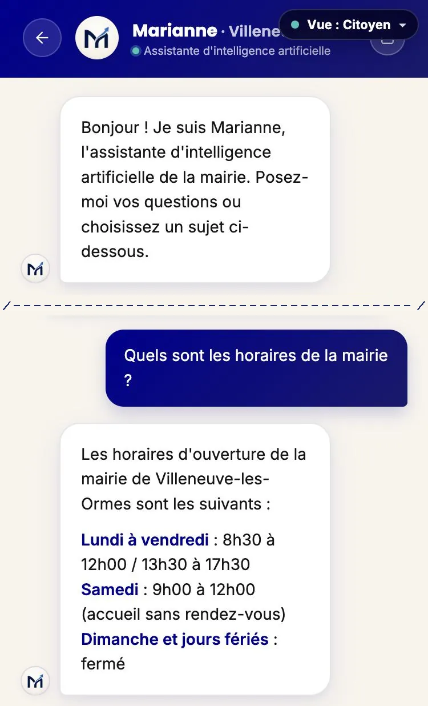

La bulle d’accueil
Marianne se présente comme une intelligence artificielle dès le premier message, que l’habitant ouvre la conversation ou pose sa question depuis l’écran d’accueil de l’application.
Règlement (UE) 2024/1689, article 50, paragraphes 1 et 5. Exigence 6 du cahier des charges, première phrase. Vérifié le .
Pour le constater
- Ouvrez la démonstration publique de Villeneuve-les-Ormes, commune fictive.
- Touchez « Marianne » en bas de l’écran. La conversation s’ouvre sur la bulle « Bonjour ! Je suis Marianne, l’assistante d’intelligence artificielle de la mairie. », et l’en-tête indique « Assistante d’intelligence artificielle ».
- Revenez à l’accueil et posez une question dans le champ « Que puis-je faire pour vous ? ». La conversation qui s’ouvre porte la même bulle en tête du fil, au-dessus de votre question : remontez le fil pour la voir.

